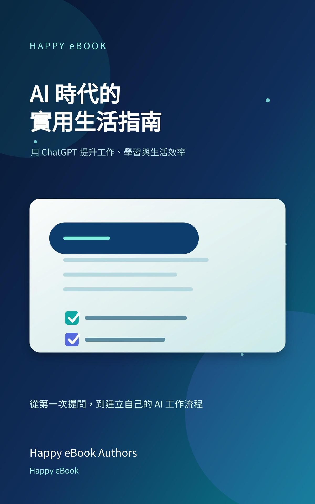

電子書
AI 時代的實用生活指南
ChatGPT 不只是聊天工具，也可以成為你的工作、學習與生活助手

AI 時代的實用生活指南
ChatGPT 不只是聊天工具，也可以成為你的工作、學習與生活助手
ChatGPT 不只是聊天工具，也可以成為你的工作、學習與生活助手。 《AI 時代的實用生活指南》專為沒有技術背景、剛開始接觸 ChatGPT 的讀者設計，透過清楚的步驟、實際案例、對話示範、表格與練習，帶你從第一次提問開始，逐步學會如何： • 規劃每日工作與處理待辦事項 • 撰寫、改寫及編輯工作文件 • 整理會議紀錄、追蹤決策與行動 • 分析資料、閱讀文章及協助研究 • 學習語言、準備考試與建立個人學習計畫 • 規劃旅遊、管理家庭與改善生活習慣 • 協助求職、職涯發展與內容創作 • 建立適合自己的 AI 工作流程